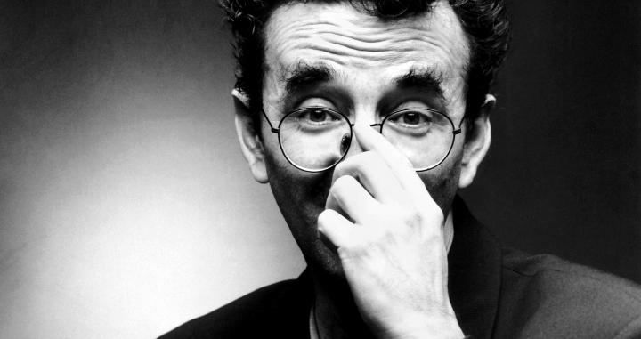
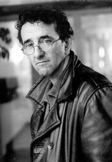

For most of his early adulthood, Bolaño was a vagabond, living at one time or another in Chile, Mexico, El Salvador, France and Spain.
Bolaño moved to Europe in 1977, and finally made his way to Spain, where he married and settled on the Mediterranean coast near Barcelona, working as a dishwasher, a campground custodian, bellhop and garbage collector — working during the day and writing at night.
He continued with his poetry, before shifting to fiction in his early forties. In an interview Bolaño stated that he made this decision because he felt responsible for the future financial well-being of his family, which he knew he could never secure from the earnings of a poet. This was confirmed by Jorge Herralde, who explained that Bolaño "abandoned his parsimonious beatnik existence" because the birth of his son in 1990
made him "decide that he was responsible for his family's future and that it would be easier to earn a living by writing fiction." However, he continued to think of himself primarily as a poet, and a collection of his verse, spanning 20 years, was published in 2000 under the title The Romantic Dogs.
Regarding his native country Chile, which he visited just once after going into voluntary exile, Bolaño had conflicted feelings. He was notorious in Chile for his fierce attacks on Isabel Allende and other members of the literary establishment.
In 2003, after a long period of declining health, Bolaño passed away. It has been suggested that he was at one time a heroin addict and that the cause of his death was a liver illness resulting from Hepatitis C, with which he was infected as a result of sharing needles during his "mainlining" days. However, the accuracy of this has been called into question. It is true that he suffered from liver failure and was close to the top of a transplant list at the time of his death.
Bolaño was survived by his Spanish wife and their two children, whom he once called "my only motherland."
Although deep down he always felt like a poet, his reputation ultimately rests on his novels, novellas and short story collections. Although Bolaño espoused the lifestyle of a bohemian poet and literary enfant terrible for all his adult life, he only began to produce substantial works of fiction in the 1990s. He almost immediately became a highly regarded figure in Spanish and Latin American letters.
In rapid succession, he published a series of critically acclaimed works, the most important of which are the novel Los detectives salvajes (The Savage Detectives), the novella Nocturno de Chile (By Night In Chile), and, posthumously, the novel 2666. His two collections of short stories Llamadas telefónicas and Putas asesinas were awarded literary prizes.
In 2009 a number of unpublished novels were discovered among the author's papers.